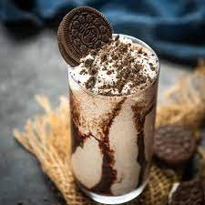

Oreo Milkshake

Description
Milkshakes are a classic American frosty treat. A creamy combination of ice cream and milk, they're served at diners and dairy shops, including fast-food favorites like Dairy Queen, Burger King, and Sonic. And while they're a delicious treat to order alongside your burger, you can easily make them at home and save a few dollars. All you need are a few simple ingredients and a blender.
With a bit of cookie crunch, rich chocolate sauce, and creamy texture, it's no wonder that people are so fond of this flavorful Oreo milkshake. Serve with a colorful straw.
Ingredients
- 1 pint vanilla ice cream (whatever a pint means)
- 1 cup milk (whole milk apparently)
- 8 Oreo cookies (or other chocolate sandwich cookies (why make an oreo milkshake with other cookies??))
- 1 tablespoon chocolate sauce
- 2 Oreo cookies, garnish
Steps
- Gather the ingredients (duh!)
- Place the vanilla ice cream, milk, 8 Oreo cookies, and the chocolate sauce in a blender and puree until smooth.
- Crush the remaining 2 Oreo cookies for the garnish by placing them in a zip-close plastic bag and pounding on them a few times with a rolling pin until they crumble.
- Pour the milkshakes into 2 tall glasses and top each with the crushed Oreo cookie crumbs. Garnish with a straw.